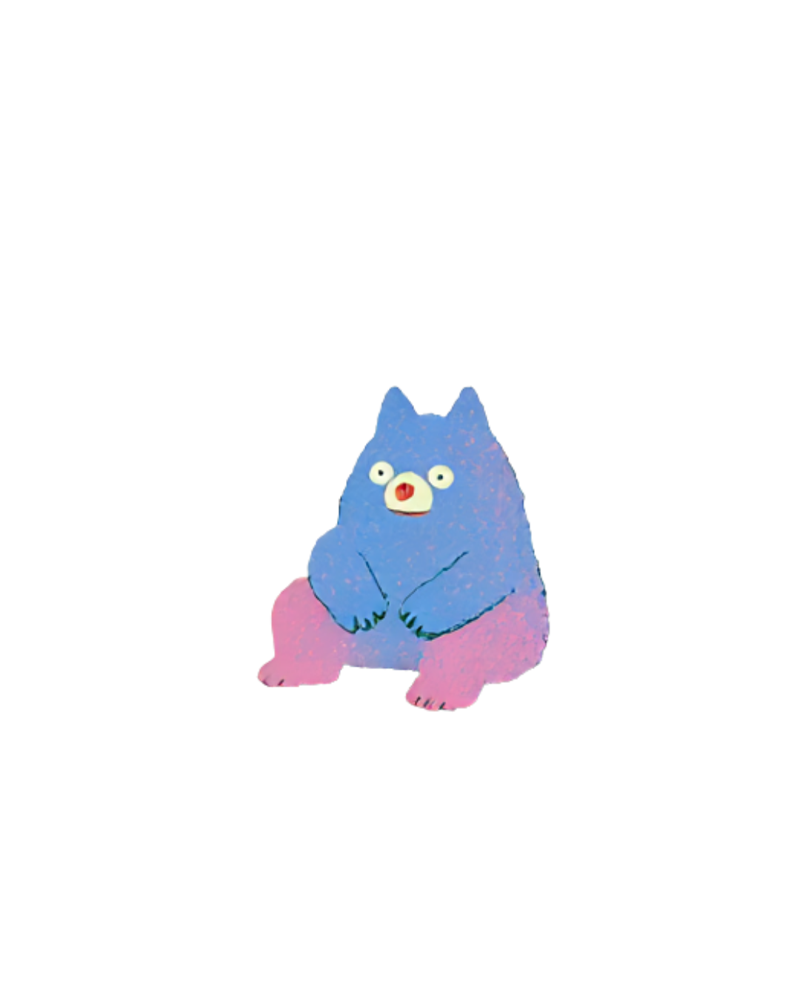

Article · 自我
安靜的力量
我們常常把安靜當作一種需要被解決的狀態。開會時沒有馬上發言，聚會後想早點回家，被說「你今天怎麼這麼安靜」的時候，忍不住想要解釋點什麼。
但安靜本身，其實不是問題，它更像是一種節奏。有些人習慣邊說邊想，有些人則需要先把話留在心裡，反覆咀嚼過一輪，才準備好說出口。
安靜不是沒有話說，而是話還在路上。

如果你也是那種需要先安靜一下，才能重新充飽電的人，也許可以練習不把這件事當成缺點。你不需要在每一次聚會都全程參與，也不需要為了合群而勉強自己一直說話。
找到自己需要安靜的時刻，並且允許自己好好使用它，也是一種與自己相處的方式。
這是一篇示範文章，之後正式內容上線後會替換成真實文章。